图文实录 · 小红书 · 叶岁岁
80个做饭小技巧，经常做饭的人要记住什么？
封面和标题都写「80 个」。按图上编号能数清的是 1–47 与 49–80，共 79 条，第 48 条没有出现。十条主题讲的是调味时机、火候、切配、焯水、搭配和去腥，几乎都不给克数，只给「一点点、少许、几滴、一勺」。
1/11
封面只给标题
大字是「80个做饭技巧」，下一行是「经常做饭的人要记住！」。中间是穿厨师帽和围裙的卡通人物，手里拿着锅和铲子，周围画着几盘热气腾腾的菜。菜名没有文字标注，无法确认具体是哪几道。画面上有小红书水印。这一页没有技巧正文。
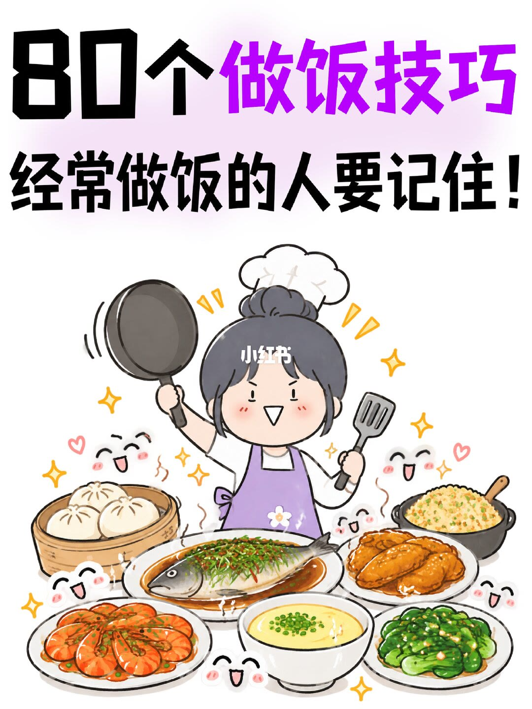
2/11
一、调味料使用篇
页题是「如何做饭更好吃」。这一页是第 1–8 条。
- 分清生抽和老抽。生抽提味，颜色较浅；老抽上色，颜色较深。用反了菜又黑又咸。
- 学会烹料酒、烹醋、烹酱油。不要直接倒在食材上，要淋在锅边，利用高温激发出香味。旁注写成「淋在锅边激发香味」。
- 糖是提鲜神器，几乎所有菜都可以加一点点，目的是提鲜和中和味道，但千万别手抖放多。旁注是「一点点就好」。
- 醋在炖肉、炖骨头时一定要放一点，可以分解纤维组织，让肉更快炖烂。
- 下调料有顺序。蔬菜：盐、糖、醋（先放盐，中间加糖，最后烹醋）。肉类：料酒、酱油、醋、糖、盐（先烹料酒、酱油、醋，中间加糖，最后加盐）。
- 肉类最好烹两次醋，一次中途去腥，一次出锅前提香。
- 菜快熟了才能放蚝油，提前下锅会让鲜味流失。
- 家里常备一瓶香油，做完菜淋几滴，香气和亮度都直接拉满。
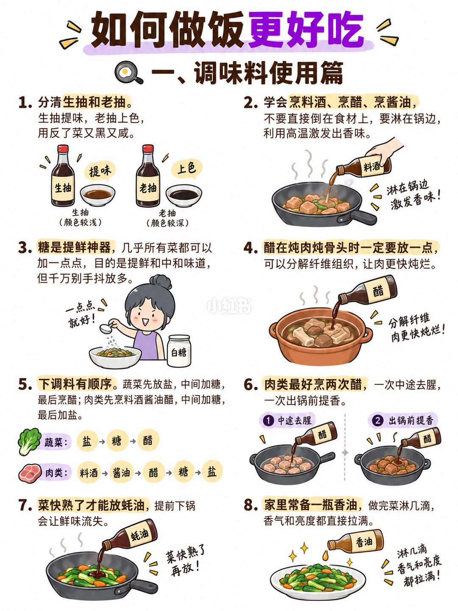
3/11
二、火候与基本功篇
第 9–16 条。
- 学会润锅，热锅凉油，这是炒菜不粘锅的第一步。旁注：先把锅烧热，再倒入凉油。
- 学会炝锅。葱、姜、蒜、干辣椒是厨房「四君子」，绝大部分菜品都可以用它们打底。
- 炝锅时火要小，慢煸炒才能出香味，大火一下去就糊了。
- 含水量大的蔬菜炒的时候不用加水，但一定要旺火速成，锅里犹豫一下菜就老了。
- 肉类滑油要低油温，三成油温下锅，肉质才嫩。图上标注「三成油温（约 90°C）」。
- 炒素菜万能公式：油和蒜爆香 + 蚝油提鲜 + 生抽调味 + 少许盐，记这一个就够用。
- 干辣椒先用温水焯一下再下锅，不易糊、不发苦。旁注是捞出沥干再下锅。
- 做菜出锅前淋一点点明油，菜色油亮不发黑，饭店的菜就是这么亮的。
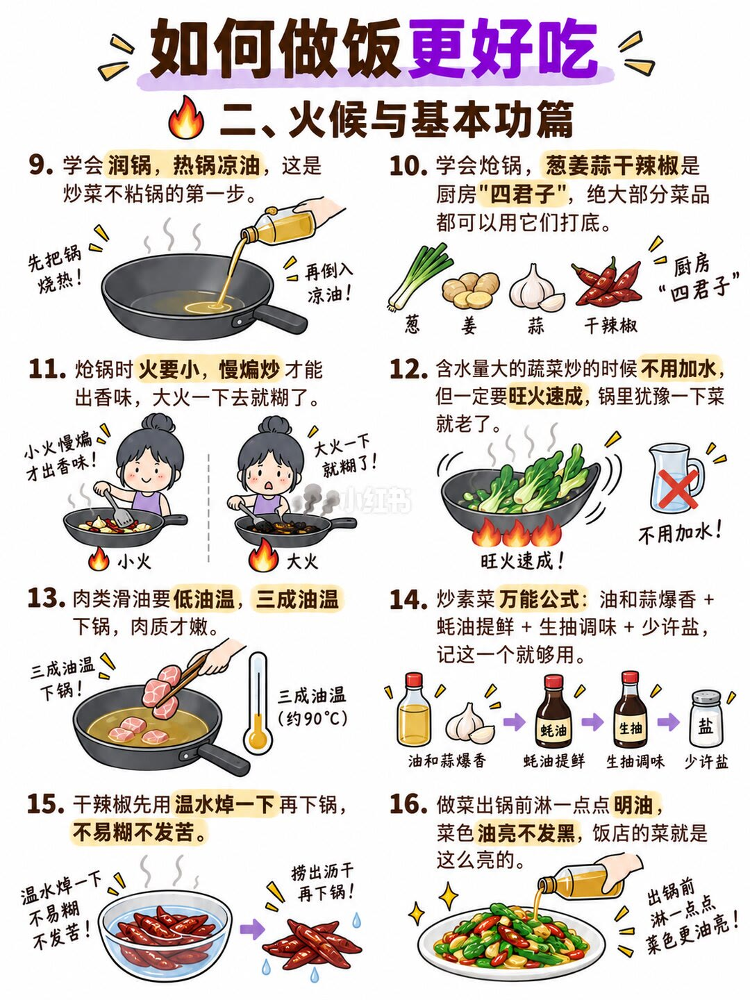
4/11
三、肉类切配与处理篇
第 17–24 条。
- 切肉口诀：横切牛肉，竖切猪，斜切鸡。纤维方向切对了，口感才嫩。
- 冻肉千万不要用开水解冻，放进盐水里解冻又快又鲜嫩。盐水浓度没有写出。
- 鲜肉不好切的时候，先放冰箱里冻半小时再下刀，切出来整整齐齐。
- 肉类焯水要冷水下锅，大火煮开撇去血沫，这样才能彻底去腥。
- 焯水后的肉要用温水清洗。遇冷水纤维会收缩，肉会变柴。
- 蔬菜类焯水要水大开下锅，微开就捞出，立刻冲凉保色。
- 肉丝、肉片上浆时可以加一点点油，下锅不容易粘连，还更滑嫩。
- 学会给肉上浆：淀粉 + 料酒 + 生抽 + 蛋清。图说饭店的肉滑嫩就是这个原理。没有比例。
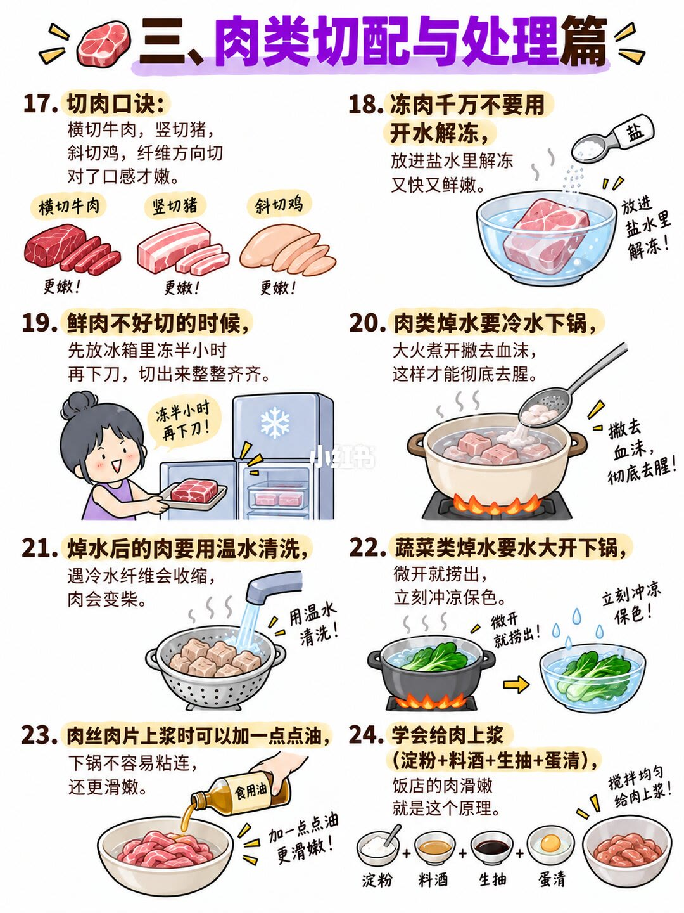
5/11
四、炖肉与肉类搭配篇
第 25–32 条。
- 炖肉时水要一次加足，万不可中途加水，加也要加开水。
- 黄金搭配：炖鸡放香菇，炖猪蹄放黄豆，炖排骨放玉米，炖牛肉放土豆，炖羊肉放萝卜。图说直接记下来。没有用量。
- 炖骨头时加一点醋，骨头里的钙质更容易释放，肉也更烂。
- 炖肉时在锅里加上几块橘子皮，可以去异味、去油腻，还能增鲜。
- 老鸡、老鸭千万别用猛火煮，肉会硬得咬不动。先用凉水加少许醋泡 2 小时，再用微火慢炖，肉就香嫩了。
- 冻饺子不能冷水下锅，要水热了再下锅，不然全破皮。图上冷水下锅打了叉。
- 红烧肉、卤肉这类菜，最后一定要大火收汁，亮油包裹才香。
- 炒肉的时候先腌制再下锅，肉质会嫩很多，尤其是猪肉、牛肉。腌料没有写出。
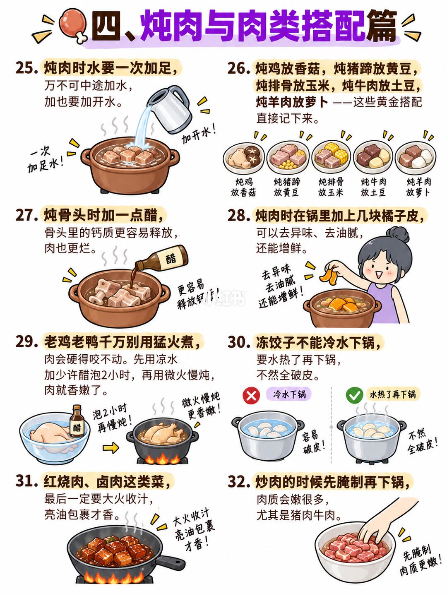
6/11
五、鱼虾海鲜篇
第 33–40 条。
- 做鱼前，鱼肚子里的黑膜一定要去掉，那是腥味的根源。
- 煎鱼之前用姜片擦一下锅底，或者撒一层薄盐，图上写「绝对不粘锅」。
- 鱼下锅后不要急着翻面，等煎到定型、自然脱锅再翻，不然必碎。
- 炖鱼汤：喝浓汤要大火，喝清汤用小火。鱼要先煎过再煮才会变白汤，而且要双面煎。
- 鱼汤煮不出奶白色，是因为用了冰冻或死太久的鱼，必须用新鲜的活鱼。
- 海鲜（虾、蟹、贝类）去腥可以用姜片、料酒、白酒，紫苏叶是神器。
- 烧鱼块之前裹一层薄薄的水淀粉再下锅炸，鱼肉完整不散。水淀粉比例没有写出。
- 蒸鱼要等水开再上锅，蒸 8–10 分钟，关火再虚蒸 2 分钟，鲜嫩不柴。没有写鱼的大小。
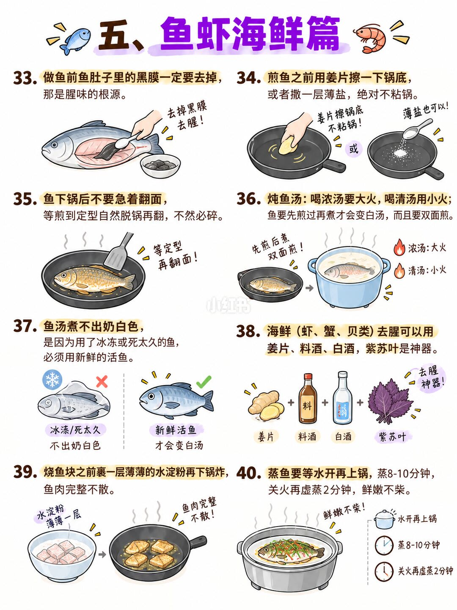
7/11
六、蔬菜豆制品篇
页题是「六、蔬菜豆制品篇」。这一页只有第 41–47 条，共 7 条。页脚卡通人物说「做菜其实很简单」。
- 蔬菜焯水时水里加油和盐，出来的菜颜色更亮、更新鲜。油和盐的量没有写出。
- 炒青菜出锅前淋一点点明油，颜色翠绿不发黑。
- 青菜类最好不勾芡，或者勾薄薄一层；肉类则一定要勾芡，亮油包裹特别香。
- 炒茄子或藕的时候加一点醋，可以防止氧化变黑。
- 炒豆芽时放一点醋，可以去除涩味，豆芽更爽脆。
- 豆腐泡在盐水里不易变质，吃之前再用清水冲一下。盐水浓度和能泡多久没有写出。
- 炒蘑菇之前焯水，味道更鲜，口感也更好。旁注是焯水去杂味。
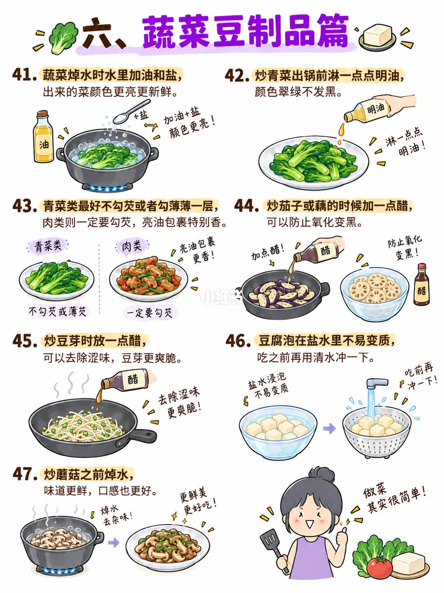
8/11
七、肉类去腥去膻专题篇
副题是「掌握这些小技巧，肉类更鲜美，厨房味道更清新」。编号从 49 开始，跳过 48，到 56。第 48 条在全套图里都没有出现。
- 羊肉去膻「四不加」：花椒、八角、料酒、大蒜。加了会让膻味更重。
- 清炖羊肉时不要加葱，加葱会让肉汤变臭。
- 羊肉去膻经典法：萝卜块和羊肉同煮半小时后捞出萝卜，放几块橘子皮效果更佳。
- 猪肉去腥：冷水下锅焯水 + 料酒 + 葱姜，是万能组合。
- 牛肉去腥：加姜片、料酒，焯水撇沫；炖的时候放几颗山楂更易烂。
- 鸡肉去腥：冷水下锅焯出血沫，加姜片、料酒，去腥效果最好。
- 鱼去腥：去黑膜 + 葱姜料酒 + 煎制，腥味基本就消失了。
- 海鲜去腥：姜片、白酒、紫苏叶是三大法宝，虾蟹都能用。
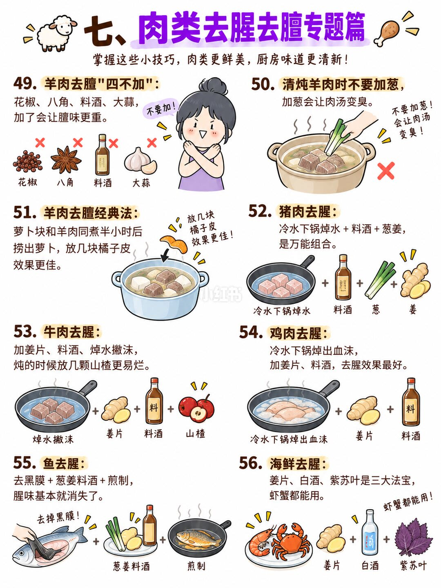
9/11
八、米面主食篇
副题是「掌握这些小技巧，主食更好吃，餐桌更幸福」。第 57–64 条。
- 焖米饭时水里加几滴油，焖出来的米饭颗粒分明。
- 米饭做好后顺着锅边加一勺油，再按一次煮饭键，跳到保温后锅底的锅巴特别香脆。图上画的是电饭煲。「一勺」没有换成克或毫升。
- 煮稀饭时锅里滴几滴香油，开锅后调小火，不会溢锅。
- 煮水饺时锅里加少许盐，水开也不会外溢，饺子还不粘连。
- 煮饺子时水开后加一些盐再放饺子，饺子味道更鲜、不粘连。和第 60 条都在讲盐，时机写成「水开后、下饺子前」。
- 煮面条时锅里加少许盐，面条不易烂糊，更有嚼劲。
- 蒸馒头、蒸包子想软糯香甜，记得加酵母 + 白糖 + 猪油 + 白醋这个组合。没有比例。
- 做馒头时在发面里揉进一小块猪油，蒸出来洁白松软还味香。
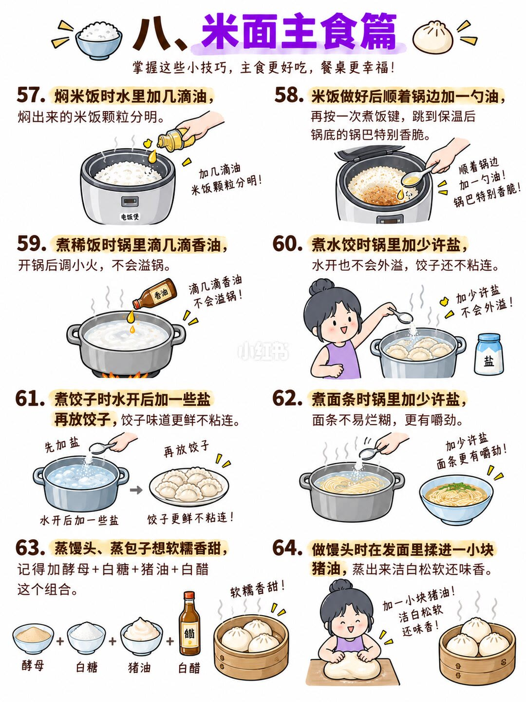
10/11
九、鸡蛋与油炸篇
第 65–72 条。
- 煮鸡蛋时水里放一点盐，鸡蛋不易破。
- 煮鸡蛋时滴几滴醋，蛋壳不会开裂，剥壳也更容易。
- 炒鸡蛋时油温要稍微高一点，蛋液下锅立刻膨起来才蓬松。没有温度数字。
- 西红柿炒鸡蛋时加一点番茄酱，汤汁更浓郁、更红亮。
- 煎荷包蛋时锅底先用姜片擦一下，煎出来的蛋特别完整不散。
- 油炸食物时锅里放少许食盐，油不会外溅。
- 炸东西时油里放一点点小苏打，炸出来的食物更酥脆。没有用量，也没有写是否先溶进面糊。
- 鸡蛋羹想要嫩滑，水和蛋液比例 1:1.5，过筛一遍再蒸，口感像布丁。没有写蒸的时间和火候。
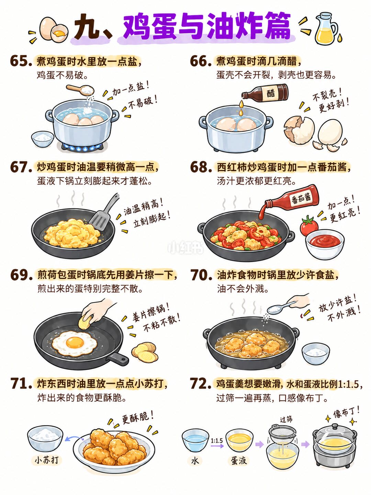
11/11
十、厨房妙招与工具保养篇
第 73–80 条。第 80 条不再是一道菜的做法。
- 经常用淘米水洗泡菜刀，菜刀不易生锈。生锈的菜刀泡淘米水数小时后容易擦干净。「数小时」没有更精确的时长。
- 切过鱼、肉、葱、蒜的菜刀和砧板，用生姜片擦一下，既可除腥又能防锈。
- 洗黑木耳时放一点点面粉，会洗下很多肉眼看不到的脏东西。
- 菜刀用久了发钝，可以用瓷碗底或者盐 + 白醋磨几下，又快如新。
- 厨房抹布容易有异味，用小苏打水煮一煮就干净无味了。浓度没有写出。
- 不锈钢锅发黑可以用白醋 + 小苏打擦拭，恢复光亮如新。
- 冰箱里放一卷纸巾，可以吸附异味，打开冰箱永远是清新的。
- 做饭这件事，多做才是硬道理——技巧再多，不下厨也是白搭。
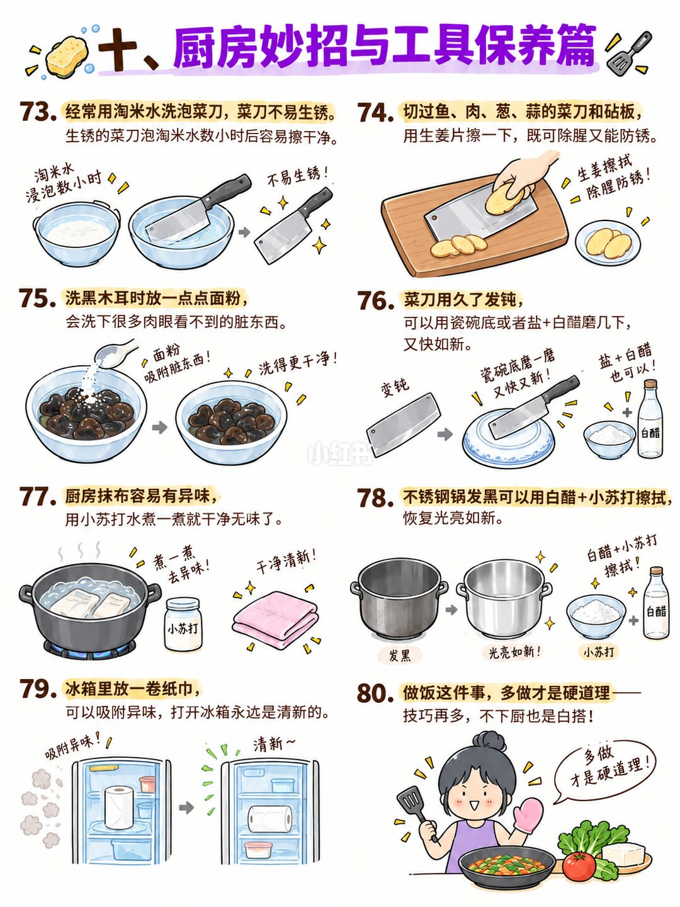
收尾
结论、支撑页、边界
结论。这组图把「好吃」收成顺序和时机：生抽提味、老抽上色；烹料淋锅边；肉冷水焯、菜开水焯；羊肉少用重香料，猪肉却靠料酒葱姜。标题写 80 条，图上能按编号数清的是 79 条。第 80 条自己说，技巧再多，不下厨也白搭。
支撑页。调味对照在第 2 页，火候在第 3 页，切配和焯水在第 4 页，炖肉加水与老鸡在第 5 页，鱼汤和蒸鱼时间在第 6 页，勾芡与豆制品在第 7 页，羊肉「四不加」在第 8 页，主食在第 9 页，蛋羹比例在第 10 页，工具保养和第 80 条在第 11 页。第 1 页只有标题。
边界。除第 3 页滑油标注约 90°C、第 5 页老鸡老鸭泡 2 小时、第 6 页蒸鱼 8–10 分钟再虚蒸 2 分钟、第 8 页萝卜同煮半小时、第 10 页水与蛋液 1:1.5，其余都是「一点、少许、几滴、一勺、一小块、几块、几颗」，不能改写成克数。盐水、上浆、腌肉、小苏打、酵母白糖猪油白醋都没有比例。第 48 条缺失。清炖羊肉不加葱，不能推广成所有羊肉菜都不加葱。蒸鱼时间没有对应鱼的大小。这些是经验口诀，不是试验数据。